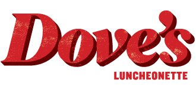
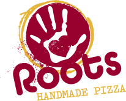

On the search for some great places to eat in Chicago? Well look no further. I've compiled my experiences from 5 months in Chicago working in the industry. This list may be slightly biased, but I can promise each restaurant listed will be among the top 5 best meals you've ever eaten. Let's begin.
Publican is one of the top eateries in Chicago, especially considering the cost per plate doesn't make you feel like you're eating at an amazingly fancy restaurant, but rather a moderately upscale eatery in Chicago. It's not cheap, but it certainly won't break the pocket book if you know what you want going in. I'd recommend going with a group of friends, since every plate is shared, and bringing a healthy appetite.
With publican, there's really no going wrong. Checkout their website for reservation details, or to browse their menu.

I may be partial to Dove's, considering it's one of my two jobs (I cook in the back Mon/Tues) but I'm not lying when I say the place is incredible. The chef knows his ingredients, and gets input from a lot of his colleagues when he finds a new recipe, workshops it, then introduces it. My favorites are the burger and the taco norteno, but the menu updates all the time, so check it out and taste your way through the menu. You won't regret it. Do ask your server which dishes to avoid if you're sensitive to spice, though, because a lot of these dishes pack flavor, and heat, in the recipes.
I'd highly recommend the fried chicken. It's been a staple since the place opened in 2014. Checkout their website for details.

"What? Roots Handmade Pizza? But you said this would be top 5 meals of all time!"
Look, I know what I said, and I meant it, but everyone has to have a cheat day. Maybe you just want to stay in? Maybe ordering online is what you're feeling right now, or maybe delivery drivers seem like guardian angels decending from the heavens with a slices of golden-brown mozerella-covered dreams in a box, and I'd have to say you're a bit strange, but, hey, I get you. And that's exactly why I'm including Roots. Will it be the greatest single meal you've ever had? Maybe not, but it'll be incredible pizza, ordered online, and delivered. Happy?
I know that description made you feel like a slice of pizza, so I'll just link straight to their order page. If you do decide to stop in, I'd also recommend a midwest draft, a seat at the bar near a TV, and a group of friends you don't mind drinking with.